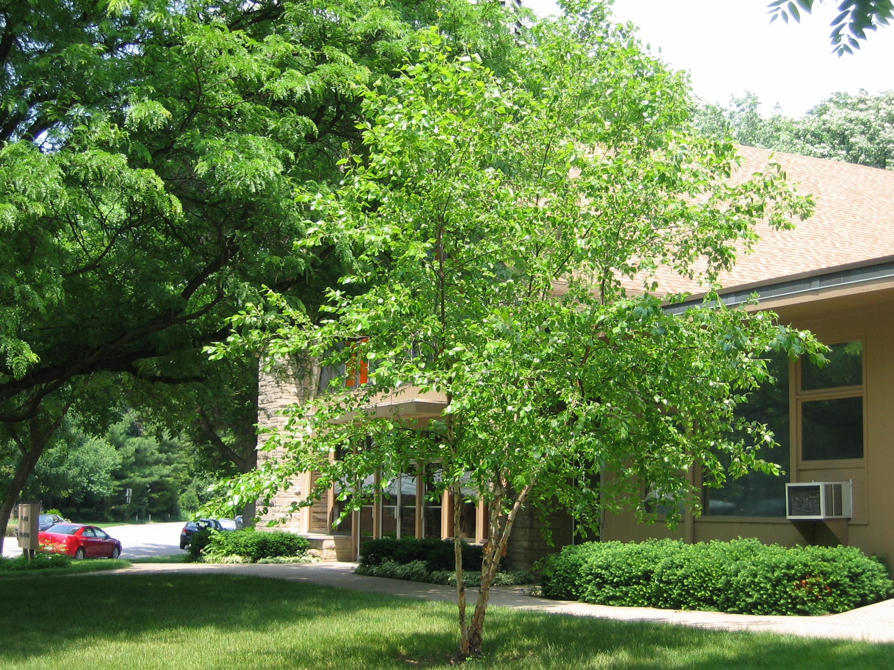
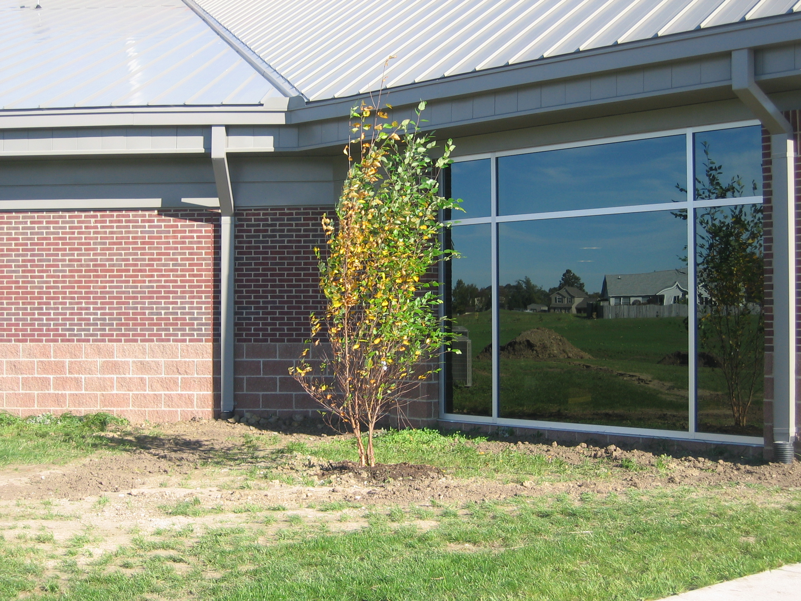
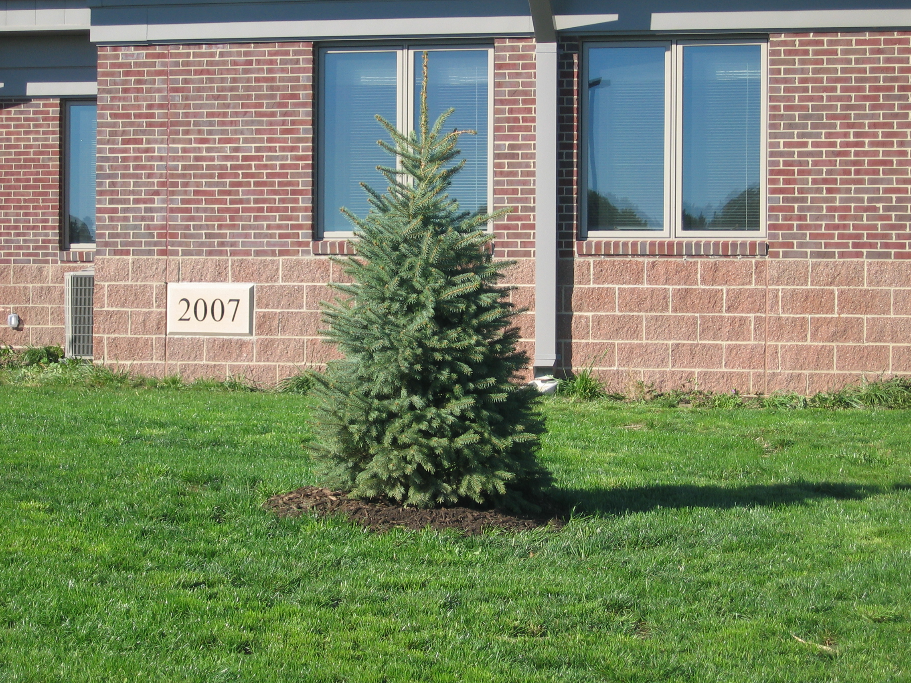

Relationship to St. Andrew: Ryan was a Member of St. Andrew where he was confirmed. He was very active in the Junior and Senior High Youth Program.
Family: Ryan was the son of Bob and Cheryl Dexter. Reverend Dexter was the Pastor of St. Andrew from 1985 to 1992. Ryan also had a sister, Tonya, and brother, Brent, who were extremely supportive of their physically challenged brother.
Recognitions: Birth defects limited Ryan in his physical ability but did not limit his spirit. He was a Special Olympic athlete with many ribbons and medals. He was a manager of his high school basketball team and received two letters. His high school class voted him, “The Most Likely to be Remembered”. His high school graduation in 1995 was a very important achievement for him.
Memorials: A tree has been planted in the front lawn of St. Andrew in memory of Ryan. In 2007 two spruce trees and two river birch trees were planted in front of the new Church to replace trees left at the Meridian Street location.
RYAN GREGORY DEXTER
Ryan was born to Bob and Cheryl Dexter in Lafayette, Indiana, on March 3 1976, and died December 23, 1999. In spite of his limitations resulting from birth defects, Ryan achieved much from learning to use sign language, talk and even walk with the aid of braces and a walker to graduating from high school in 1995. His senior class voted him "Most Likely to be Remembered,' and he is. Ryan is remembered as being a goal-oriented and strong-willed student, often persevering against seemingly insurmountable odds. It frequently took him hours to complete an assignment that his classmates could finish in minutes.
He is remembered for his love of sports as both a competitive participant and as an avid fan. He won many ribbons in Special Olympic events and played every sport he and his brother could modify for indoor crawling with energy and zeal. He actively supported numerous teams at his high schools (Lafayette Jefferson and Fort Wayne Snider) and at West Lafayette High School where his sister, Tonya, and his brother, Brent, attended. He earned two letters as manager of the Snider boys basketball team and the respect of the athletes he high-fived and cheered.
Ryan is remembered for his sense of humor. He loved to laugh and to make others laugh with his witty remarks. Ryan is remembered as a loving, caring family member and friend who inspired the lives of all who knew him and as a person who had hope even though his condition didn't.

Birch Tree at 333 Meridian St. in June of 2007

Replacement River Birch.

Replacement Spruce Tree